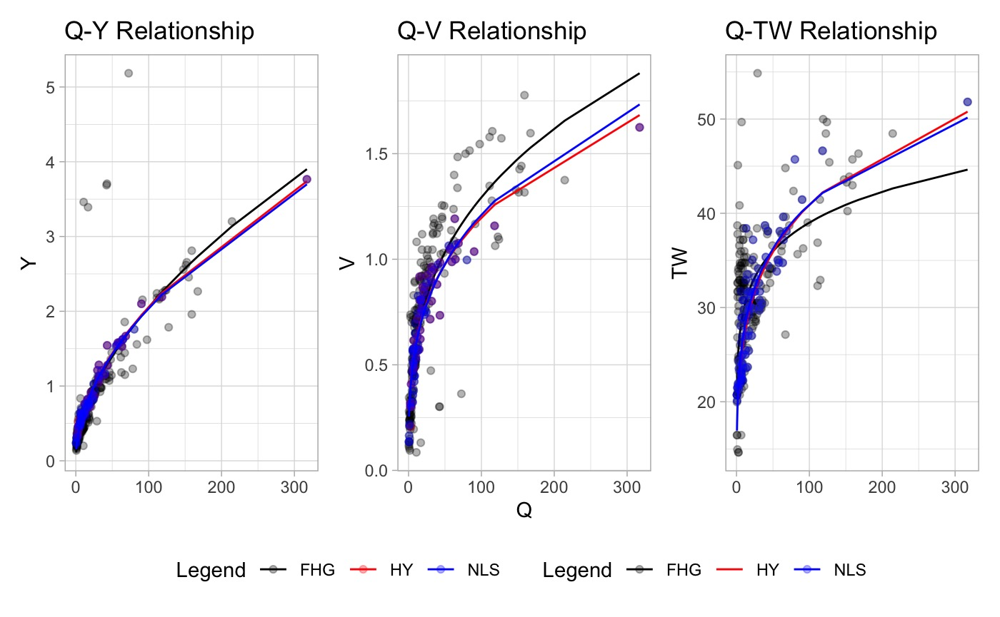

Data Preprocessing
Mike Johnson
Lynker, NOAA-AffilateSource:
vignettes/data-filtering.Rmd
data-filtering.RmdData Filtering Functions
Often the data that comes from long records of stream observation are noisy. Noise can come from changes in the river itself, changes in measurement methods, or even measurement locations.
While the FHG algorithm implemented in this package can deal with
this noise through the hybrid the
OLS --> NLS --> NSGA2 --> combo fitting method, it
is also possible, and even advisable, to filter the data prior to
fitting.
Here we will illustrate the packaged methods. An assumption of all filtering methods is that if it reduces the dataset to less then 10 observations, a warning is shown and the input data is returned.
1. Median Absolute Deviation (mad)
An iterative outlier detection procedure can be run iteritivly on the residuals of linear regressions for each relationship following the procedure described in the HyG dataset. Values of log-transformed TW, V, and Y residuals falling outside a specified median absolute deviation (MAD) are excluded with each pass until no outliers are left.
This approach can be implemented using mad_filter:
data <- select(nwis, date, Q = Q_cms, Y = Y_m, TW = TW_m, V = V_ms)
mad_data <- mad_filter(data, envelope = 3)2. Temporal
Rivers change with time. To minimize the effects of long-term channel
evolution it can be advantageous to limit the records to the most recent
years. This approach can be implemented using date_filter.
Users can specify the number of years to keep (in reference to the most
recent observation) and whether the maximum flow value should be kept
regradless of when it was taken.
date_data <- date_filter(data, years = 5, keep_max = TRUE)3. Q = vA Assumption
One of the basic assumptions of the AHG relation is that Q = vA where
v is velocity, A is cross sectional area, and Q is stream flow. The
qva_filter can be used to remove measurements that grossly
violate this assumption. Within the code, A is assumed to be the product
of Y and TW and an allowance can be specific that determines the amount
of allows deviation from equality. The default allowance is .05.
qva_data <- qva_filter(data, allowance = .05)4. NLS prediciton
Through out the development of this package it became evident that the NLS approach, when using OLS estimates as seeds, provided the best relation by relation fit. This approach fits the NLS equations for each provided relationship. This fit is used to predict [V,TW,Y] for all given Q’s. If the actual value is outside the specified allowance (default = +/- 50%) it is removed.
nls_data <- nls_filter(data, allowance = 0.5)Chaining Commands
Multiple filtering approaches can be chained together to isolate a representative dataset from the complete archive. For example, we could reduce the complete dataset to a 10 year record that respects the Q=vA assumption and has no data outside of 3 MAD in any relation:
xf <- data %>%
# Keep the most recent 10 year
date_filter(year = 10, keep_max = TRUE) %>%
# Keep data within 3 Median absolute deviations (log residuals)
mad_filter() %>%
# Keep data that respects the Q = vA criteria w/in allowance
qva_filter()
Example(s)
# Best attempt to mimic the HyG dataset
hf_df <- data %>%
date_filter(5, keep_max = TRUE) %>%
qva_filter(allowance = .05) %>%
mad_filter(envelope = 3)
# NLS based filtering
nls_df <- data %>%
date_filter(10, keep_max = TRUE) %>%
nls_filter(allowance = .5)
x1 <- ahg_estimate(df = data)
x2 <- ahg_estimate(df = hf_df)
x3 <- ahg_estimate(df = nls_df)
Significance
The relationship between all supplied log transformed variables are computed. If the p-value of any of these is less then the supplied p-value an error message is emitted and it can be assumed that no statistical relationship exists between Q-{TW,V,Y}.
s <- significance_check(data)